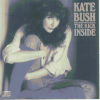

Cloudbusting -- Kate
Bush In Her Own Words
Cloudbusting -- Kate
Bush In Her Own Words

The Kick Inside Album
- Released 17 February 1978
Made No. 3 Triple Platinum
Tracks:
- Hello everyone. This is Kate Bush and I'm here with my new album
The Kick Inside and I hope you enjoy it. The album is something
that has not just suddenly happened. It's been years of work because since I
was a kid, I've always been writing songs and it was really just collecting
together all the best songs that I had and putting them on the album, really
years of preparation and inspiration that got it together. As a girl, really,
I've always been into words as a form of communication. And even at school I
was really into poetry and English and it just seemed to turn into music with
the lyrics, that you can make poetry go with music so well. That it can
actually become something more than just words; it can become something
special. (1978, Self
Portrait)

- Maybe another interesting thing about this album is that two of the
tracks, `` The
Man With The Child In His Eyes'' and ``Saxophone Song''
were recorded about three years ago. This was in fact my initial plunge into
the business, as they say, with the help of Dave Gilmour from Pink Floyd. I
managed to get through to him through a contact of my brothers' and at that
time he was looking around for unknown talent. He came along and heard me and
we put some things down and he put up the money for me to make my first demo in
a proper recording studio with arrangements. I owe to him the fact that I got
my contract and that I'm where I am now. Two of these original tracks that we
had on the demo are on the album, so maybe that helps with the variation.
(1978, Self Portrait)
- There are thirteen tracks on this album. When we were getting it
together, one of the most important things that was on all our mind was, that
because there were so many, we wanted to try and get as much variation as we
could. To a certain extent, the actual songs allowed this because of the tempo
changes, but there were certain songs that had to have a funky rhythm and there
were others that had to be very subtle. I was very greatly helped by my
producer and arranger Andrew Powell, who really is quite incredible at tuning
in to my songs. We made sure that there was one of the tracks, just me and the
piano, to, again, give the variation. We've got a rock 'n' roll number in
there, which again was important. And all the others there are just really the
moods of the songs set with instruments, which for me is the most important
thing, because you can so often get a beautiful song, but the arrangements can
completely spoil it - they have to really work together. (1978, Self Portrait)
- I think it went a bit over the top [In being orientally
influenced], actually. We had the kite, and as there is a song on the album
by that name, and as the kite is traditionally Oriental, we painted the dragon
on. But I think the lettering was just a bit too much.
- On the whole I was surprised at the amount of control I actually had
with the album production. Though I didn't choose the musicians. I thought they
were terrific.
- I was lucky to be able to express myself as much as I did,
especially with this being a debut album. Andrew was really into working
together, rather than pushing everyone around. I basically chose which tracks
went on, put harmonies where I wanted them...
- I was there throughout the entire mix. I feel that's very important.
Ideally, I would like to learn enough of the technical side of things to be
able to produce my own stuff eventually. (1978, The Blossoming Ms. Bush)
-
 Back when I
recorded Kick I had just discovered the enjoyment of
dance and I was so knocked out by that,
that writing was a breeze for me. (1984, Pulse!)
Back when I
recorded Kick I had just discovered the enjoyment of
dance and I was so knocked out by that,
that writing was a breeze for me. (1984, Pulse!)
How did you manage, right from the word go, to find such a great
bunch of musicians, all of them so terribly articulate and tasteful, yet none
of them so stylized that he might detract from your own musical identity by
imposing something inappropriately idiomatic?
- Well, in all fairness, the first album was all down to the producer,
Andrew Powell, and the engineer, Jon Kelly. As far as I know, it was mainly
Andrew Powell who chose the musicians, he'd worked with them before and they
were all sort of tied in with Alan Parsons. There was Stuart Elliot on drums,
Ian Bairnson on guitar, David Paton on bass, and Duncan Mackay on electric keyboards.
And, on that first album, I had no say, so I was very lucky really to be given
such good musicians to start with. And they were lovely, 'cause they were all
very concerned about what I thought of the treatment of each of the songs. And
if I was unhappy with anything, they were more than willing to re-do their
parts. So they were very concerned about what I thought, which was very nice.
And they were really nice guys, eager to know what the songs were about and all
that sort of thing. I don't honestly see how anyone can play with feeling
unless you know what the song is about. You know, you might be feeling this
really positive vibe, yet the song might be something weird and heavy and sad.
So I think that's always been very important for me, to sit down and tell the
musicians what the song is about. (1985, Musician)
- That was
such a long time ago. Some of the those songs were written eight years ago.
They feel a long way away and I haven't heard it in years, so I don't really
know how I would react to it if I heart it. But the last time I heard it I was
quite shocked by how young I sounded.
Some of the songs date back to about 11, true?
- No, the earliest would be about 15, the latest about 17 or 18.
[she cites her favorite songs as ``
Moving'' and ...] I suppose I have to like ``Wuthering Heights''
(1983, Wireless)
- That was a very important LP - it was my first, and was very
successful, with the single (
"Wuthering Heights") on it. I think it was basically responsible for
everything that's happened to me in the last five years.
- I was very young at the time, and listening back I think I sound
young and fresh. I'm still very affectionate toward it. It was something I'd
been waiting years to do, and I think there were some good songs on it -
``The Kick Inside'' and ``
Moving'' are probably my favourites. (1984, Women of Rock)
Looking back on your debut album, the kick inside, how
do you listen... Do you often listen to it now? Do you still put it on the
turntable at home?
- No, I haven't heard it for years.
Why's that?
- Um, it's old!
But how do you look on that album now, as a sort of very
experimental?
- I think it was probably the least experimental of all the albums.
I'd written, say, two hundred songs from which we chose the thirteen songs that
went on that. And it was recorded very quickly, there was very little time for
experimentation. It was something that had a lot of forethought gone into it.
(1985, Profile 6)
- I'd wanted to make an album for such a long time so there was a
great feeling of achievement. I hope I've matured since then. Some of those
songs were written seven years before the album appeared. [If kate is not
exaggerating, this is the first time she has indicated that `` the man with the child
in his eyes'' is not the only song on the kick inside
which was written as long ago as 1971, but that several others may date from as
early as her twelfth or thirteenth year. -ied] (1989, Tracks)
Gaffaweb /
Cloudbusting / Music /
The Kick Inside Album